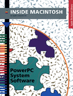

Legacy Document
Important: The information in this document is obsolete and should not be used for new development.
Important: The information in this document is obsolete and should not be used for new development.


Inside Macintosh: PowerPC System Software
 Inside Macintosh: PowerPC System Software describes the process execution environment and system software services provided with the first version of the system software for Macintosh on PowerPC computers. It contains information you need to know to write applications and other software that can run on those computers.Inside Macintosh: PowerPC System Software shows in detail how to make your software compatible with the new run-time environment provided on PowerPC-based Macintosh computers and to take advantage of the much greater processing speed of those computers. With this book, you'll learn how to
To use this book, you need to be familiar with the run-time environment of 680x0 applications, as described in the two books Inside Macintosh: Processes and Inside Macintosh: Memory.
- pass callback routines to system software or other external code to your code
- handle import libraries
- build PowerPC code resources that model 680x0 code resources
- load and execute your own resources that contain PowerPC code
- construct a code fragment resource for your PowerPC application
- patch system software routines with either 680x0 or PowerPC code
- write and install exception handlers for PowerPC applications
Availability: Click below to obtain Inside Macintosh: PowerPC System Software in any of the following formats.

Book Contents
- Figures, Tables, and Listings
- Preface - About This Book
- Chapter 1 - Introduction to PowerPC System Software
- Chapter 2 - Mixed Mode Manager
- Chapter 3 - Code Fragment Manager
- Chapter 4 - Exception Manager
- Glossary